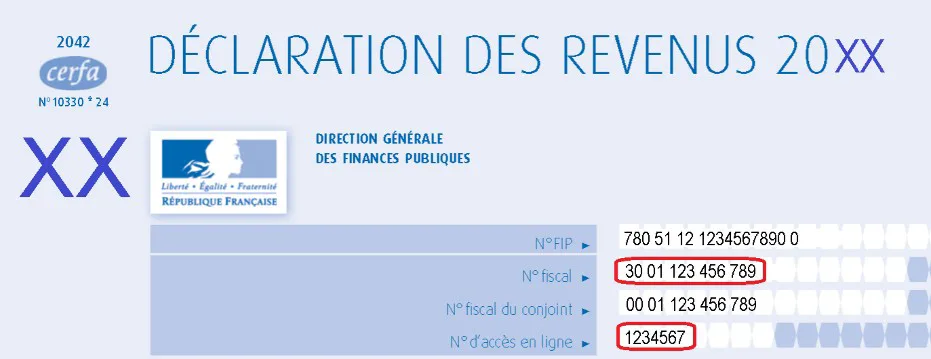
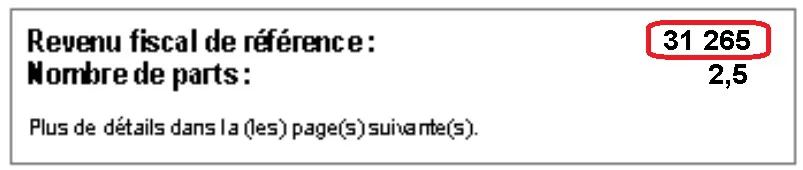
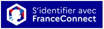
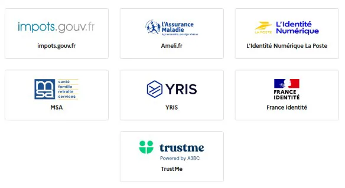
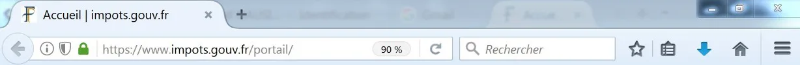
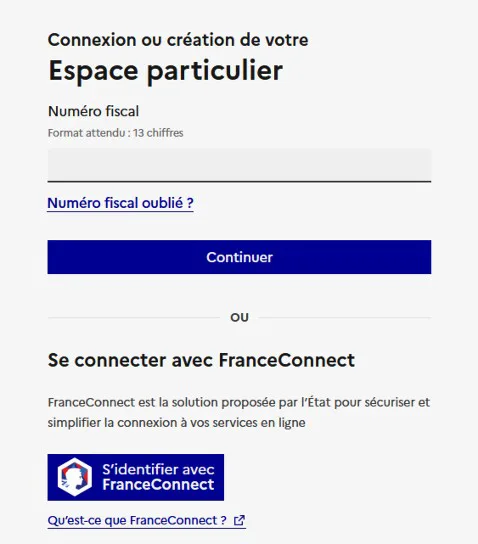
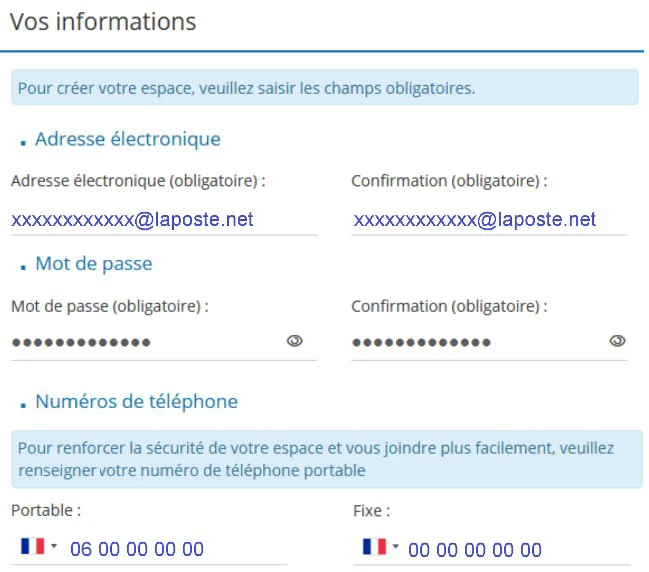
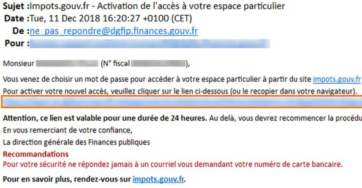

À quoi sert l’espace particulier ?
L’espace particulier est votre espace personnel sur le site des Finances publiques. Il vous permet notamment de :
- consulter vos avis d’imposition
- payer vos impôts en ligne
- gérer vos prélèvements
- échanger avec votre centre des impôts
Ce qu’il faut préparer avant de commencer
Pour créer votre espace, vous avez besoin :
- de votre numéro fiscal (13 chiffres)
- de votre numéro d’accès en ligne (7 chiffres)
- de votre revenu fiscal de référence
- d’une adresse électronique valide
Accéder au site impots.gouv.fr

Ouvrez votre navigateur internet et allez sur www.impots.gouv.fr. Cliquez ensuite sur « Votre espace particulier ».
Choisir votre méthode de connexion
Vous avez deux possibilités :
- utiliser FranceConnect (si vous avez déjà un compte Ameli, La Poste, etc.)
- ou créer votre espace avec vos identifiants fiscaux

Saisir vos identifiants fiscaux

Renseignez les trois informations demandées, puis cliquez sur « Continuer » à chaque étape.
Créer votre mot de passe et renseigner vos coordonnées

Choisissez un mot de passe solide et conservez‑le soigneusement. Indiquez également un numéro de téléphone portable.
Choisir vos options et préférences

Par défaut, les documents sont consultables en ligne. Vous pouvez modifier ce choix si vous préférez le courrier papier.
Valider votre compte


Saisissez le code reçu par SMS, puis cliquez sur le lien d’activation reçu par email. Votre espace est alors activé.
Où trouver vos identifiants fiscaux

Et après ?
Une fois votre espace créé, vous pouvez vous connecter à tout moment avec votre numéro fiscal et votre mot de passe, ou via FranceConnect.
← Retour aux tutoriels